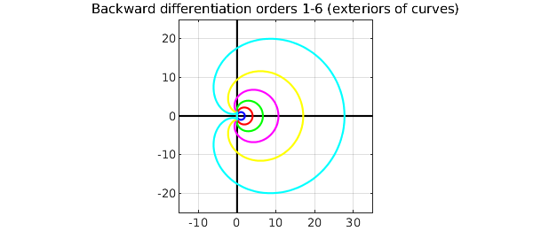
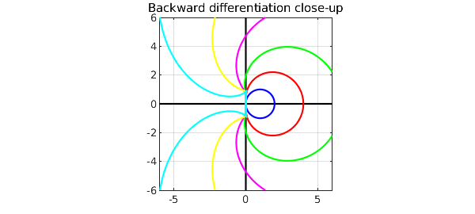

Stability regions are a standard tool in the analysis of numerical formulas for ODE initial-value problems. Given a formula -- 2nd-order Adams-Bashforth, say, or 3rd-order backward differentiation -- the stability region is the region of the complex $\lambda \Delta t$-plane where the associated scalar constant-coefficient recurrence relation is stable. Here $\Delta t$ is the time step and $\lambda$ is the parameter in the scalar constant-coefficient linear model problem $du/dt = \lambda u$.
Small stability regions indicate that you might need very small time steps. This is particularly an issue with stiff ODEs, containing a variety of time scales. For stiff problems one wants large or unbounded stability regions, and backward differentiation formulas have this property.
We can plot boundaries of some stability regions rather nicely with Chebfun. First we define some colors, and a region of the complex plane to work in.
CO = 'color'; c = {'b','r','g','m','y','c'};
x = [0 0]; y = [-8 8]; K = 'k';
The Adams-Bashforth formulas are the simplest family of explicit linear multistep methods; they are the basis of the MATLAB code ode113. Here are stability regions for the Adams-Bashforth formulas of orders 1, 2, 3. (We can't go higher without extra effort, because at order 4 this method would give a loop that would need to be lopped off.) As the order increases, the regions get smaller, corresponding to stricter limits on the allowable time step.
plot(y,x,K), hold on, plot(x,y,K)
t = chebfun('t',[0 2*pi]);
z = exp(1i*t); r = z-1;
s = 1; plot(r/s,CO,c{1}) % order 1
s = (3-1/z)/2; plot(r/s,CO,c{2}) % order 2
s = (23-16/z+5/z^2)/12; plot(r/s,CO,c{3}) % order 3
axis([-2.5 .5 -1.5 1.5]), axis square, grid on
title('Adams-Bashforth orders 1,2,3')
The Runge-Kutta formulas are one-step methods, a bit trickier to derive but simpler to apply; they are the basis of the MATLAB codes ode23 and ode45. To plot their stability regions, we need to solve an equation. We can do that with a Newton iteration, which we terminate here after 3 or 4 steps. Here are stability regions of RK formulas of order 1,2,3,4. In this case the regions get bigger as the order increases.
clf, plot(y,x,K), hold on, plot(x,y,K)
w = z-1;
plot(w,CO,c{1}) % order 1
for i = 1:3
w = w-(1+w+.5*w^2-z^2)/(1+w);
end
plot(w,CO,c{2}) % order 2
for i = 1:4
w = w-(1+w+.5*w^2+w^3/6-z^3)/(1+w+w^2/2);
end
plot(w,CO,c{3}) % order 3
for i = 1:4
w = w-(1+w+.5*w^2+w^3/6+w^4/24-z^4)/(1+w+w^2/2+w^3/6);
end
plot(w,CO,c{4}) % order 4
axis([-5 2 -3.5 3.5]), axis square, grid on
title('Runge-Kutta orders 1,2,3,4')
Finally we look at the backward differentiation formulas of orders 1-6, which are related to the MATLAB code ode15s. In this case the stability regions are the exteriors of the curves drawn.
clf, plot(8*y,x,K), hold on, plot(x,8*y,K)
d = 1-1/z; r = 0;
for i = 1:6
r = r+d^i/i;
plot(r,CO,c{i})
end
axis([-15 35 -25 25]), axis square, grid on
title('Backward differentiation orders 1-6 (exteriors of curves)')

Here is a close-up. The order 1 and 2 RK formulas are A-stable, meaning that their stability regions contain the whole left half-plane. The stability regions of the order 3, 4, 5, 6 formulas contain the negative real axis but not the whole left half-plane.
axis(6*[-1 1 -1 1])
title('Backward differentiation close-up')

References
- E. Hairer and G. Wanner, Solving Ordinary Differential Equations II: Stiff and Differential-Algebraic Problems, Springer, 1996.